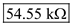
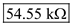

Step 1:
(a)
Refer to Figure E5.27 in the textbook.
Consider the following equation for open-circuit voltage gain of common-source amplifier:
Here,  is the supply voltage,
is the supply voltage,  is the drain voltage,
is the drain voltage,  is the overdrive voltage.
is the overdrive voltage.
Substitute 10 V for  , 2.5 V for
, 2.5 V for  , and 1 V for
, and 1 V for  .
.
Therefore, the open-circuit voltage gain,  is, .
is, .
Step 2:
(b)
Consider that is doubled by reducing  by a factor of 2, while
by a factor of 2, while  is kept unchanged.
is kept unchanged.
The new value of overdrive voltage is 0.5 V.
The equation for drain current is,

Here,  is the process transconductance parameter.
is the process transconductance parameter.
Substitute for  , 0.5 V for
, 0.5 V for  .
.
Thus, the new value of the drain current,  is,
is,  .
.
Step 3:
Apply Kirchhoff’s voltage law to the drain loop to calculate the drain resistance value.
Therefore, the new value of drain resistance,  is,
is,  .
.
The transconductance of the amplifier is,
Therefore, the transconductance of the amplifier,  is, .
is, .
The small-signal output resistance of the amplifier is,
Thus, the small-signal output resistance of the amplifier,  is, .
is, .
Step 4:
(c)
Calculate the open-loop voltage gain of the amplifier.
Substitute  for
for  ,
,  for
for  , and 0.5 mA/V for
, and 0.5 mA/V for  .
.
Thus, the open-loop voltage gain of the amplifier,  is,
is,  .
.
Step 5:
Calculate the output resistance,

.
Substitute for  , and for
, and for  .
.
Therefore, the output resistance,  is, .
is, .
Step 6:
(d)
Consider the following small-signal equivalent circuit to find the overall voltage gain.

Step 7:
Apply voltage division rule to the left side loop in the circuit.
Apply voltage division rule to the right side loop in the circuit.
Substitute the expression for  in the equation.
in the equation.
Therefore, the overall voltage gain,  is,
is,
Substitute for  ,
,  for gate resistance,
for gate resistance,  ,
,  for
for  ,
,  for
for  , and
, and  for load resistance,
for load resistance,  in the equation.
in the equation.
Therefore, the overall gain of the amplifier,  is, .
is, .
Step 8:
(e)
To double the open-loop voltage gain,  , overdrive voltage,
, overdrive voltage,  reduced to half.
reduced to half.
Initially, the drain current,  is 0.5 mA, and the new value of drain current is 0.125 mA. Therefore, the drain current is reduced by 4 times.
is 0.5 mA, and the new value of drain current is 0.125 mA. Therefore, the drain current is reduced by 4 times.
The voltage gain almost doubled.
The output resistance,  is multiplied by 4.
is multiplied by 4.
Overall gain is slightly reduced.